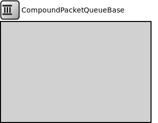

Package: inet.queueing.queue
CompoundPacketQueueBase
compound moduleThis compound module serves as a base module for complex packet queues formed by combining several queueing components.
Inheritance diagram
The following diagram shows inheritance relationships for this type. Unresolved types are missing from the diagram.
Known subclasses
| Name | Type | Description |
|---|---|---|
| CompoundPendingQueue | compound module | (no description) |
| DiffservQueue | compound module |
This is an example queue, that can be used in interfaces of DS core and edge nodes to support the AFxy (RFC 2597) and EF (RFC 3246) PHBs. |
| DSQueue1 | compound module |
Diffserv Queue used in Experiment 1.1 - 1.6 and 5.1. |
| DSQueue2 | compound module |
Diffserv Queue used in Experiment 2.1 - 2.4. |
| EthernetQosQueue | compound module |
Queue module that gives the PAUSE frames a higher priority, and can be parametrized with an ~IPacketQueue for serving the data frames. |
| EthernetQosRedQueue | compound module |
Queue module that gives the PAUSE frames a higher priority, and using Random Early Detection algorithm on data frames, and can be parametrized with an ~IPacketQueue for serving the data frames. |
| ExampleCompoundPriorityQueue | compound module | (no description) |
| GatingPriorityQueue | compound module |
This module implements a priority queue with multiple inner queues each having its own periodic gate for packet selection and an optional shared memory buffer. |
| Ieee8021qTimeAwareShaper | compound module |
This module implements the IEEE 802.1Q time aware shaper. |
| PriorityQueue | compound module |
This module implements a priority queue with multiple inner queues and an optional shared memory buffer. |
| PriorityShaper | compound module |
This module combines a classifier, a scheduler and several traffic shapers into a single packet shaper. Packets are classified into one of the traffic shapers and the scheduler prioritizes among them. |
| RedDropperQueue | compound module |
Combines a packet queue with random early detection (RED) dropper. |
| REDQueue | compound module | (no description) |
Extends
| Name | Type | Description |
|---|---|---|
| PacketQueueBase | simple module |
This is a base module for various packet queue modules which maintains a few statistics. |
Parameters
| Name | Type | Default value | Description |
|---|---|---|---|
| displayStringTextFormat | string | "contains %p pk (%l) pushed %u created %c\n pulled %o removed %r dropped %d" |
determines the text that is written on top of the submodule |
| packetCapacity | int | -1 |
maximum number of packets in the queue, no limit by default |
| dataCapacity | int | -1b |
maximum total length of packets in the queue, no limit by default |
| dropperClass | string | "" |
determines which packets are dropped when the queue is overloaded, packets are not dropped by default; the parameter must be the name of a C++ class which implements the IPacketDropperFunction C++ interface and is registered via Register_Class |
Properties
| Name | Value | Description |
|---|---|---|
| display | i=block/queue | |
| class | CompoundPacketQueueBase | |
| defaultStatistic | queueLength:vector |
Gates
| Name | Direction | Size | Description |
|---|---|---|---|
| in | input | ||
| out | output |
Signals
| Name | Type | Unit |
|---|---|---|
| packetRemoved | inet::Packet | |
| packetPushStarted | inet::Packet | |
| packetDropped | inet::Packet | |
| packetPushEnded | inet::Packet? | |
| packetPulled | inet::Packet |
Statistics
| Name | Title | Source | Record | Unit | Interpolation Mode |
|---|---|---|---|---|---|
| queueBitLength | queue bit length | warmup(atomic(constant0(localSignal(packetPushEnded)) + sum(packetLength(localSignal(packetPushStarted))) - sum(packetLength(localSignal(packetPulled))) - sum(packetLength(localSignal(packetRemoved))) - sum(packetLength(localSignal(packetDropped))))) | last, max, timeavg, vector | b | sample-hold |
| queueLength | queue length | warmup(atomic(constant0(localSignal(packetPushEnded)) + count(localSignal(packetPushStarted)) - count(localSignal(packetPulled)) - count(localSignal(packetRemoved)) - count(localSignal(packetDropped)))) | last, max, timeavg, vector | pk | sample-hold |
| droppedPacketsQueueOverflow | dropped packets: queue overflow | packetDropReasonIsQueueOverflow(localSignal(packetDropped)) | count | pk | none |
| queueingTime | queueing times | queueingTime(localSignal(packetPulled)) | histogram, vector | s | none |
| incomingDataRate | incoming datarate | throughput(localSignal(packetPushStarted)) | vector | bps | linear |
| flowQueueingTime | flow queueing times | queueingTime(demuxFlow(localSignal(packetPulled))) | histogram, vector | s | none |
| incomingPacketLengths | incoming packet lengths | packetLength(localSignal(packetPushStarted)) | sum, histogram, vector | b | none |
| flowIncomingDataRate | flow specific incoming data rate | throughput(flowPacketLength(demuxFlow(localSignal(packetPushStarted)))) | vector | bps | linear |
| outgoingDataRate | outgoing datarate | throughput(localSignal(packetPulled)) | vector | bps | linear |
| outgoingPacketLengths | outgoing packet lengths | packetLength(localSignal(packetPulled)) | sum, histogram, vector | b | none |
| droppedPacketLengthsQueueOverflow | dropped packet lengths: queue overflow | packetLength(packetDropReasonIsQueueOverflow(localSignal(packetDropped))) | sum, vector | b | none |
| flowOutgoingDataRate | flow specific outgoing data rate | throughput(flowPacketLength(demuxFlow(localSignal(packetPulled)))) | vector | bps | linear |
| incomingPackets | incoming packets | localSignal(packetPushStarted) | count | pk | |
| outgoingPackets | outgoing packets | localSignal(packetPulled) | count | pk |
Source code
// // This compound module serves as a base module for complex packet queues formed // by combining several queueing components. // module CompoundPacketQueueBase extends PacketQueueBase like IPacketQueue { parameters: int packetCapacity = default(-1); // maximum number of packets in the queue, no limit by default int dataCapacity @unit(b) = default(-1b); // maximum total length of packets in the queue, no limit by default string dropperClass = default(""); // determines which packets are dropped when the queue is overloaded, packets are not dropped by default; the parameter must be the name of a C++ class which implements the IPacketDropperFunction C++ interface and is registered via Register_Class displayStringTextFormat = default("contains %p pk (%l) pushed %u created %c\n pulled %o removed %r dropped %d"); @class(CompoundPacketQueueBase); @defaultStatistic(queueLength); @signal[packetPushStarted](type=inet::Packet); @signal[packetPushEnded](type=inet::Packet?); @signal[packetPulled](type=inet::Packet); @signal[packetRemoved](type=inet::Packet); @signal[packetDropped](type=inet::Packet); // the statistical value is the number of packets in the queue @statistic[queueLength](title="queue length"; source=warmup(atomic(constant0(localSignal(packetPushEnded)) + count(localSignal(packetPushStarted)) - count(localSignal(packetPulled)) - count(localSignal(packetRemoved)) - count(localSignal(packetDropped)))); record=last,max,timeavg,vector; interpolationmode=sample-hold; unit=pk; autoWarmupFilter=false); // the statistical value is the total bit length of all packets in the queue @statistic[queueBitLength](title="queue bit length"; source=warmup(atomic(constant0(localSignal(packetPushEnded)) + sum(packetLength(localSignal(packetPushStarted))) - sum(packetLength(localSignal(packetPulled))) - sum(packetLength(localSignal(packetRemoved))) - sum(packetLength(localSignal(packetDropped))))); record=last,max,timeavg,vector; unit=b; interpolationmode=sample-hold; autoWarmupFilter=false); // the statistical value is the queueing time of packets @statistic[queueingTime](title="queueing times"; source=queueingTime(localSignal(packetPulled)); record=histogram,vector; unit=s; interpolationmode=none); // the statistical value is the incoming packet @statistic[incomingPackets](title="incoming packets"; source=localSignal(packetPushStarted); record=count; unit=pk); // the statistical value is the length of the incoming packet @statistic[incomingPacketLengths](title="incoming packet lengths"; source=packetLength(localSignal(packetPushStarted)); record=sum,histogram,vector; unit=b; interpolationmode=none); // the statistical value is the data rate of the incoming packets @statistic[incomingDataRate](title="incoming datarate"; source=throughput(localSignal(packetPushStarted)); record=vector; unit=bps; interpolationmode=linear); // the statistical value is the outgoing packet @statistic[outgoingPackets](title="outgoing packets"; source=localSignal(packetPulled); record=count; unit=pk); // the statistical value is the length of the outgoing packet @statistic[outgoingPacketLengths](title="outgoing packet lengths"; source=packetLength(localSignal(packetPulled)); record=sum,histogram,vector; unit=b; interpolationmode=none); // the statistical value is the data rate of the outgoing packets @statistic[outgoingDataRate](title="outgoing datarate"; source=throughput(localSignal(packetPulled)); record=vector; unit=bps; interpolationmode=linear); // the statistical value is the packet that is dropped due to queue overflow @statistic[droppedPacketsQueueOverflow](title="dropped packets: queue overflow"; source=packetDropReasonIsQueueOverflow(localSignal(packetDropped)); record=count; unit=pk; interpolationmode=none); // the statistical value is the length of the packet that is dropped due to queue overflow @statistic[droppedPacketLengthsQueueOverflow](title="dropped packet lengths: queue overflow"; source=packetLength(packetDropReasonIsQueueOverflow(localSignal(packetDropped))); record=sum,vector; unit=b; interpolationmode=none); // the statistical value is the flow specific queueing time of packets @statistic[flowQueueingTime](title="flow queueing times"; source=queueingTime(demuxFlow(localSignal(packetPulled))); record=histogram,vector; unit=s; interpolationmode=none); // the statistical value is the flow specific data rate of the incoming packets @statistic[flowIncomingDataRate](title="flow specific incoming data rate"; source=throughput(flowPacketLength(demuxFlow(localSignal(packetPushStarted)))); record=vector; unit=bps; interpolationmode=linear); // the statistical value is the flow specific data rate of the outgoing packets @statistic[flowOutgoingDataRate](title="flow specific outgoing data rate"; source=throughput(flowPacketLength(demuxFlow(localSignal(packetPulled)))); record=vector; unit=bps; interpolationmode=linear); @defaultStatistic(queueLength:vector); }File: src/inet/queueing/queue/CompoundPacketQueueBase.ned
 This documentation is released under the Creative Commons license
This documentation is released under the Creative Commons license